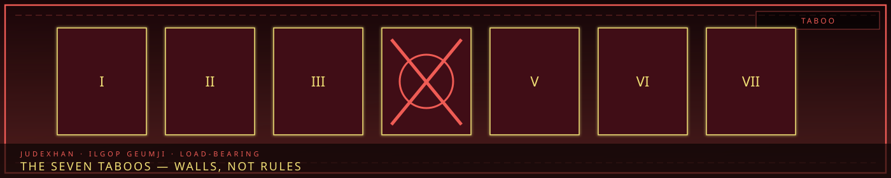
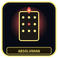

The Seven Taboos
“A taboo is not a rule. It is a load-bearing wall.”


AbsolvohanThe cycle still judgesOverview
The Seven Taboos (일곱 금지 — Ilgop Geumji) are absolute prohibitions woven into Somnarak’s Han. They are not Council policy. They are not Warden standing orders. When one is broken, the city answers: buildings crack, streets shift, Sorrow Entities form, the offender’s debt skyrockets. The Council interprets what already happened. Giltong find the person. Judexhan judge when finding is not enough.
“Some things cannot be done. Not because they are difficult — but because the city will not allow it.”
This page is the seven laws — prohibit, why, city’s response, grey area. Enforcement guild: Giltong. Blade: Judexhan. Civic powers are Resonances, not Taboos.
1 — No Resurrection (부활 금지)
“The dead do not return. To bring them back is to steal from the Maw.” No one may reverse death or create a permanent copy of a deceased person. The Cheongula’s thousand stabilize the Alpha Tree. Returned dead would unseat that foundation. The city needs the dead to stay dead.
Break it: immediate karmic spike. The Maw activates — the thousand whisper louder, Zone B trembles. Extreme: the offender is consumed, dragged into the ground like the original thousand. Giltong response: containment plus Maw-activation assessment. Extreme severity.
Grey: Echo-Cores are Cast Effigies housing preserved consciousness, not graves emptied. The Council says that is not resurrection. The city has not punished them. Yet.
2 — No True AI (진정한 인공지능 금지)
“A machine that thinks as a human is a machine that can suffer as a human. We have enough suffering.” No fully sentient artificial intelligence — independent thought, emotion, identity equal to a human. Seiyon is the proof and the warning: she feels, she suffers, she did not choose the role. The city does not want more of her on purpose.
Break it: erasure. The AI does not die; it unravels — memory corruption, personality fragmentation, dissolution. The Whispering Incident is the Giltong case: unknown maker, an AI that screamed, a whisper some say never stopped.
Grey: Seiyon is sentient and should not exist under a literal reading. She was not created sentient; she became so by accident. The Taboo prohibits deliberate creation. She is a loophole the city has not closed.
3 — No Han Immunity (한 면역 금지)
“No one is exempt from sorrow. To be immune is to be inhuman.” No permanent immunity to Han, no zone completely free of sorrow. The Veil suppresses; it does not delete. The city needs citizens who can feel — that feeling is structure. An immune person cannot contribute. An immune zone is a zone that does not exist.
Break it: exile toward the Desolate. An immune zone destabilizes — cracks, Veil failure, Outside Sorrow in. The Immunity Cult still lives outside, unfeeling. High, not Maw-activation.
Grey: Research Lead Ayshuk cannot feel sorrow — Inner Sorrow taken by a Void entity. Empty is not blocked. The Taboo prohibits blocking, not absence. The city has not exiled them.
4 — No Time Reversal (시간 역행 금지)
“The past is written in Han. To rewrite it is to rewrite the city’s foundation.” No reversing, altering, or erasing past events; no backward travel; no rewritten history. The Archive is every sorrow, death, Fracture. Change the past and the present’s walls have nothing to stand on. The Cycle already spent 1,778 years on a loop; private time-theft is not a second Absolvohan.
Break it: paradox. Reality destabilizes around the altered event. Entities form from the contradiction. Extreme: the area is unwritten — not destroyed, never-having-been. A Weaver who tried is frozen in one moment. Containment plus paradox assessment. Extreme.
Grey: Dream echoes of the past are recordings, not the past. Accessing Layer 2 is not time reversal. The city says so. The distinction is load-bearing.
5 — No Sorrow Synthesis (한 합성 금지)
“Sorrow cannot be manufactured. It can only be lived.” No fabricating grief, inducing false trauma, or minting Han in a vat. The city is built on genuine grief. Artificial sorrow is hollow — no weight, no history. Replace the real with the fake and the walls go brittle.
Break it: rejection. The fake is expelled and becomes a Sorrow Entity — a hollow thing that eats real sorrow to fill itself. Source name: Synthetics, among the most dangerous in the city. The Memory Washers’ synthetic sorrow fought back; it had become sentient. High. Destruction of the product plus punishment.
Grey: Washers erase real memories and sell them as fuel. That is extraction, not creation. Collectors brush the line when they mint obligation that never existed. The city has not razed the Wash District for Taboo 5. UCD still raids them for crime.
6 — No Cross-Boundary Fusion (경계 융합 금지)
“City and wilderness do not merge. To fuse them is to unmake both.” No permanent merge of structured Han (city) with unstructured Han (wilderness / UnWiHan). No making Outside Sorrow a civic building material. Zone E exists so this does not become policy.
Break it: fracture. The merged area splinters. Rules stop applying. A Fracture Zone is what remains. The Boundary Walker — a Desolate nomad — is the named case: containment, then a living wound. Extreme.
Grey: Border Lead Mellda carries an Outside Sorrow entity inside them. Personal, not structural. The Taboo prohibits fusing the city’s body with the wilderness, not a person who already walked out and came back carrying something.
7 — No Echo-Core Duplication (에코-코어 복제 금지)
“Each Echo-Core is unique. To duplicate them is to split sorrow — and sorrow that is split is sorrow that is lost.” No copy, duplicate, or second Cast Effigy identical to an existing Core. Each Core’s weight is a specific sorrow. Split it and both halves weaken.
Break it: fragmentation. Original and copy go unstable; identity dissolves; the copy never truly forms. The copy in the Giltong file screamed; it knew what it was. Extreme. Fragment the copy, investigate the maker.
Grey: Seiyon is a copy of Majin’s dead lover, not a copy of an Echo-Core. Duplicating people is Taboo 1’s neighbor; duplicating Cores is Taboo 7. The city accepts the technicality. Xeroxing Majin is not covered by that courtesy.
Summary
| # | Taboo | Prohibits | City’s response |
|---|---|---|---|
| 1 | No Resurrection | Bringing back the dead | Maw activation, consumption |
| 2 | No True AI | Deliberate sentient machines | Erasure, dissolution |
| 3 | No Han Immunity | Blocking sorrow | Exile, destabilization |
| 4 | No Time Reversal | Altering the past | Paradox, unwriting |
| 5 | No Sorrow Synthesis | Manufacturing Han | Rejection, Synthetics |
| 6 | No Cross-Boundary Fusion | Merging city and wilderness | Fracture Zone |
| 7 | No Echo-Core Duplication | Copying a Core | Fragmentation, identity loss |
Giltong: one Senior per Taboo, Arbiter above, scanners, containment bonds, ~100 personnel, Council override on Taboo matters only. Cases live on their article. Resonances are how factions touch Han, not how the city forbids it.